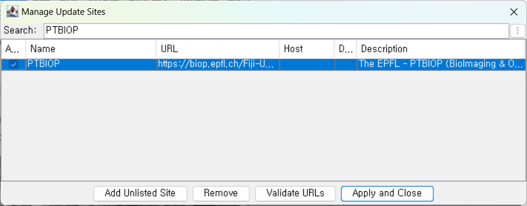
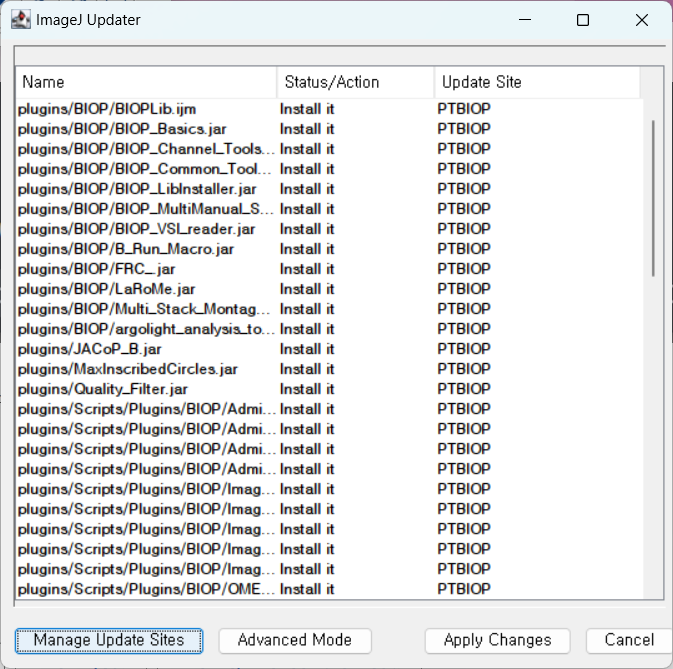
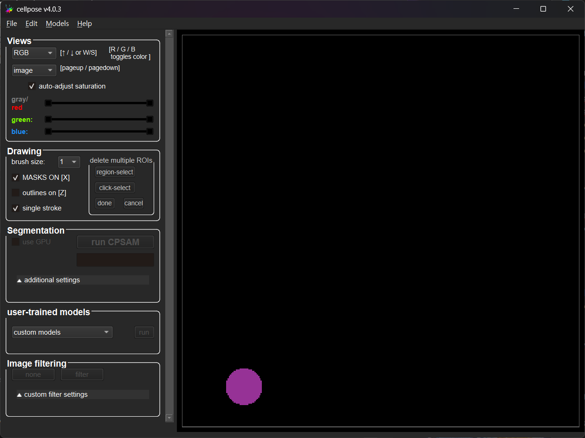
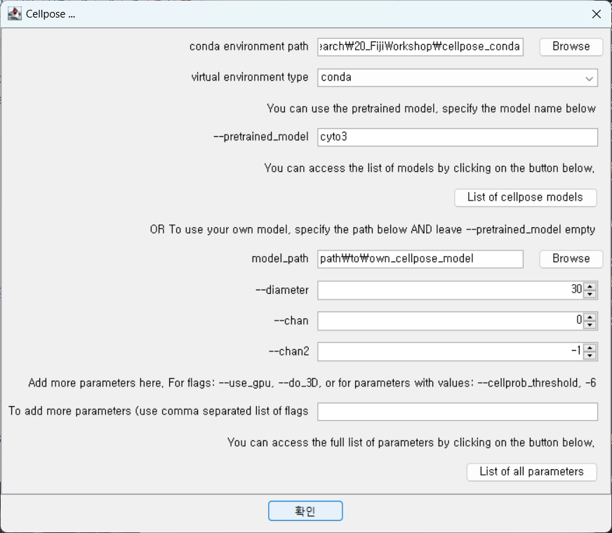
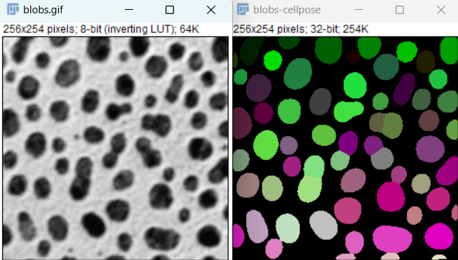
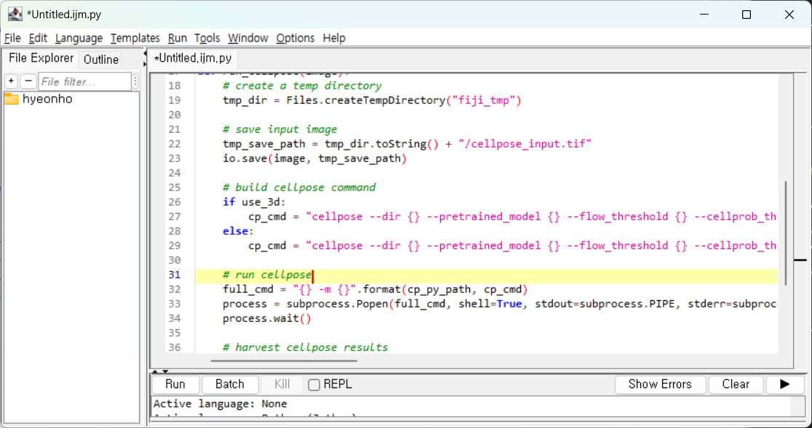
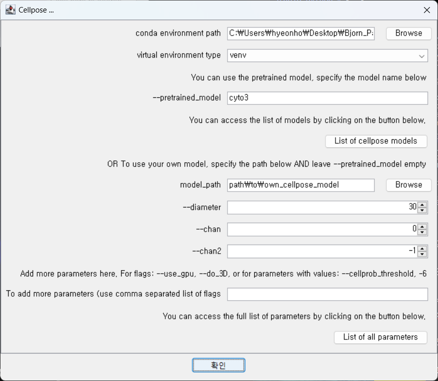

Deep Learning Classification with Cellpose#
Cellpose is an open-source deep-learning toolkit which can performs cell segmentation on almost any time of microscopy image. Under the hood, it uses a U-Net that is trained to predict spatial “flow” fields which point outward from an inferred cell center. It ships with several pre-trained models which are tailored for different cell types:
cytosol
nuclei
bacteria
fluorescence imaging
phase contrast imaging
For more information on cellpose, see: Stringer, C., Wang, T., Michaelos, M. et al. Cellpose: a generalist algorithm for cellular segmentation, Nat Methods 18, 100-106 (2021). DOI: 10.1038/s41592-020-01018-x
Installation#
The Cellpose plugin for Fiji runs as a combination of a python environment and Fiji. This means installation is a bit complicated. In general, you will need python, and a python package manager like pip or uv. You can install cellpose easily with the package manager, then we will need to run a plugin or script in Fiji and tell the plugin or script where cellpose is. So there are a lot of options. I will share the simplest ones first:
1. Install conda#
If you don’t have python yet, download and install conda, which bundles python and pip:
https://conda-forge.org/miniforge/
Download the file “environment.yml” from https://raw.githubusercontent.com/brp-optics/fiji_lab_walkthrough/refs/heads/main/_static/environment.yml, or https://tinyurl.com/cellposeconda. Save it to the folder where you want to install cellpose.
I recommend you put it somewhere in your personal files, not in “Program Files” or “/bin/”. The environment.yml file tells conda which versions of python and pip to install and run, and how to install cellpose:
2. Install via conda and environment.yml.#
On Windows, open up “Miniforge Prompt” from Program Files. On Linux or Mac, open “Terminal”.
Navigate to where you want to install using the terminal. You can use cd <directory> to change where you are to <directory> and pwd (Mac) or cd alone (Windows) to see which directory you are in. You can use ls (Mac) or dir (Windows) to see the things in your current directory.
Once you get to where you want to install, run
conda env create -f environment.yml
This will take a few minutes.
3. Install Fiji Plugin#
While we wait for conda to run, we will install the PTBIOP Fiji plugin, which allows us to run cellpose from Fiji:
Help > Update > Manage Update Sites > check PTBIOP > Apply and Close > Apply Changes


Then close and reopen Fiji.
4. Test standalone cellpose#
Once cellpose is installed, run cellpose by itself. Back in the terminal:
conda activate condacellpose
cellpose
You will see some text, then up to 30 seconds later the following user interface will appear:

5. Save the conda location#
Copy the output of the following command to a text editor window: pwd (Linux, Mac), cd (Windows).
6. Just in case, save the python location.#
Copy the output of the following command to a text editor window:
python -c "import sys; print(sys.executable)"
Run cellpose from Fiji#
Cellpose can take a long time to run, so we test it on blobs first. Press Ctrl-Shift-B to open blobs, then run cellpose from Plugins > BIOP > Cellpose/Omnipose > Cellpose

Set the pretrained model to
cyto3and also remove the parameter--use-gpu(unless you have a nice gpu!)

Choosing your model#
Cellpose is a framework for running (and training) many different models for segmenting different regions of microscopy images. These models are named things like nuclei for segmenting the cell nuclei, cyto for cytoplasm, etc. The cyto model is a general cytoplasmic segmentation model, whereas the cyto3 model is a more generic model, trained on a larger variety of images, and is more resistant to noise.
cyto: cytoplasm segmentation, optimized for whole-cell fluorescent or bright-field images; trained from a limited dataset
cyto2: trained from a user-submitted dataset with more cell types and stains
cyto2_cp3: cellpose3 cytoplasm, but trained on the limited dataset from
cytocyto3: generalist cytoplasm model trained on nine public datasets (fluorescence, BF, mammalian, microbe, …). Auto-estimates diameters.
nuclei: nuclear masks only, same training datasets as
cyto3livecell_cp3: cytoplasm segmentation on transmitted-light live-cell data. Trained on the Sartorius LIVECell bright-field dataset.
deepbacs_cp3: bacterial cell bodies in phase-contrast images.
tissuenet_cp3: nuclear and small-cell masks in multi-fluorescence tissue sections.
bact_fluor_cp3: fluorescent micrographs of bacteria.
bact_phase_cp3: phase-contrast bacteria.
neurips_cellpose_default: 3-channel RGB fluorescence composites. This model won the NeurIPS Cell Segmentation Challenge.
neurips_cellpose_transformer: same NeurIPS dataset but with a SegFormer/ViT backbone
neurips_grayscale_cyto2: grayscale-only cyto2, accepts single-channel input.
transformer_cp3: cellpose-3 weights transplanted onto a transformer backbone (SegFormer) for 3-channel input.
yeast_BF_cp3: s. cerevisiae in bright-field
yeast_PhC_cp3: s. cerevisiae in phase-contrast
You can also train your own models, although it is computationally expensive: it is recommended to have a GPU and significant RAM.
Alternative run script#
Ed Evans wrote another script to run cellpose which shows all the available models. You may find it at elevans/fiji-scripts.
Press Ctrl-Shift-N to open the text editor, and don’t forget to set the Language > Python (Jython).

Select the input image and paste in the location of python which you saved in the text editor earlier.
Other samples#
Fluorescent nuclei: File > Open Samples > Fluorescent Cells
Limit to the blue color channel: Ctrl-Shift-D,
Fluorescent cells (cytosol):
Download brp-optics/fiji_lab_walkthrough and drag-and-drop it to Fiji
Alternative install instructions#
1. Downloading and installing python:#
on Linux/Mac, try running
pythonandpython3, orwhich pythonin the terminal.on Windows, download the Windows Installer for python from https://www.python.org/ftp/python/3.13.3/python-3.13.3-amd64.exe.
(If you are running a different cpu type than 64 bit Intel, then go to https://www.python.org/downloads/release/python-3133/.
2. Install a Cellpose python environment without conda:#
a. Start a virtual environment. This keeps programs installed for cellpose from interfering with the rest of your system’s installed programs:
on Linux: Open up the shell to where you want to install and run the following code, one line at a time:
python3 --version
python3 -m venv cellpose
pip install cellpose[gui]
on Windows: Open
cmd, navigate to the directory you want to work in withcd, then run
py -m venv cellpose
cellpose\Scripts\activate
pip install cellpose[gui]
If you prefer uv to pip:
uv install cellpose
uv install cellpose[gui]
uv activate
If you like conda:
conda create --name cellpose python=3.11
conda activate cellpose
python -m pip install 'cellpose[gui]'
python -m pip install cellpose
python -m pip install cellpose --upgrade
3. Test to make sure it works from python:#
python -m cellpose
Or if using uv:
uv run cellpose
4. Install the Fiji Update Site PTBIOP#
See detailed instructions above.
5. Run cellpose in Fiji#
Restart Fiji and open up blobs with Ctrl-Shift-B. Run “cellpose”. Point the cellpose plugin at the location of your conda environment or venv, and disable gpu:
